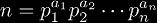
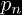
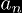
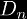

There is a problem posted on a wall of the math club at the University of Maryland, by the author Andrew Snowden. He apparently teaches both there and at Princeton, and poses many interesting problems in mathematics. The problem set was simply called Some More Problems, and contained problems from algebra and number theory to real and complex analysis. The second problem posted cought my attention, as it related to nested exponentials, so I will reproduce it here:
A natural number n may be factored as  where the  are distinct prime numbers and  are natural numbers. Since the are natural numbers, they may be factored in such a manner as well. This process may be continued, building a "factorization tree" until all the top numbers are 1. Thus any question that can be asked of trees (i.e. the height of a tree, the number of nodes in a tree, etc.) may be asked of our natural number n. This problem is about the height of n which we denote h(n). Define:
 is sort of the density of numbers with height at least n. It is obvious that since all numbers have height at least 1.
|
Copyright © 2010 Andrew Robbins ( |
|